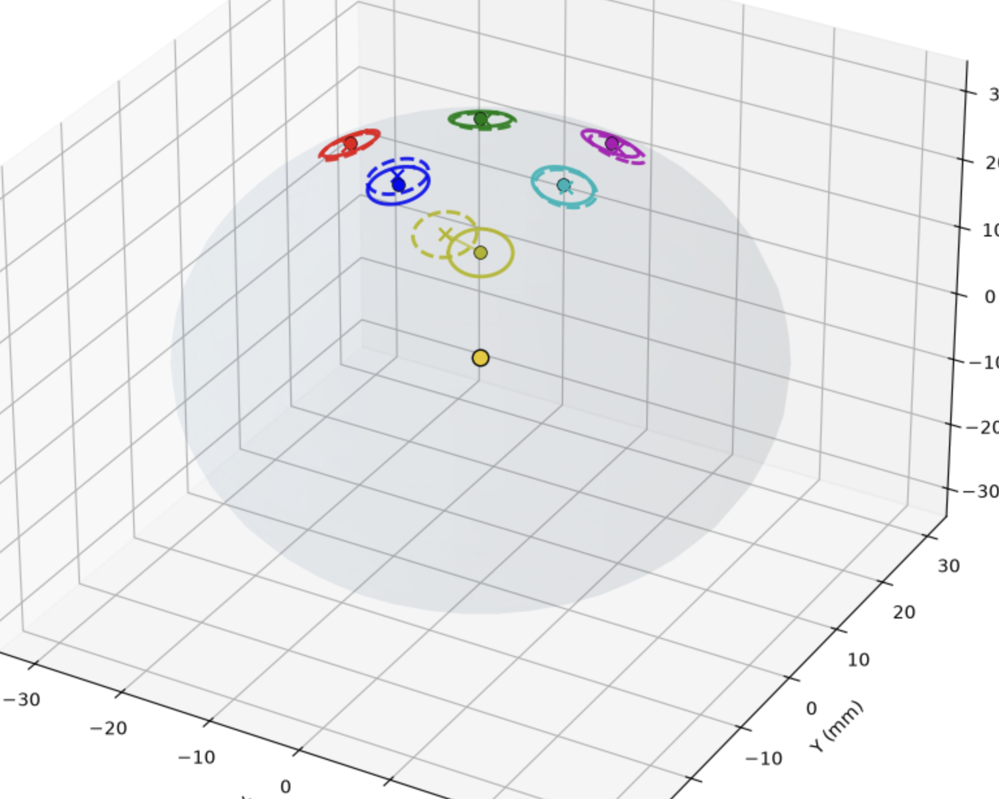
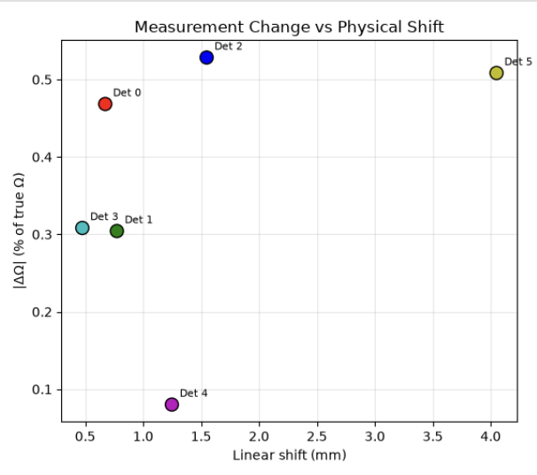
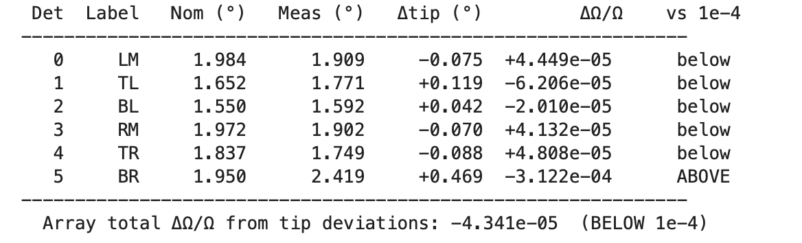

A Monte Carlo simulation built to support the Liu lab's neutron-lifetime experiment: it checks whether real, laser-measured detector offsets push the experiment above its 10⁻⁴ error bound.



The Liu lab is measuring the lifetime of a neutron to an accuracy of 10⁻⁴. The experiment detects alpha particles from neutron capture on Boron-10 with an array of six detectors, and the detection rate depends on the solid angle each detector covers, which depends on exactly where each detector sits. The apertures were laser-scanned, and the measured positions differ from the ideal ones by up to a few millimeters. Nobody knew whether those offsets push the error above the 10⁻⁴ bound, so I built a Monte Carlo simulation to support the lab's existing physics simulation and find out.
I wrote the simulation in Python. Monte Carlo made sense here because the neutron source itself behaves randomly: the simulation generates particles in random directions and counts how many pass through each detector aperture.
Four decisions I can explain the reasoning behind.
How I generate directions. My first version used a complex formula and was much too slow, so I changed it to sampling just z and the azimuthal angle, two random numbers per particle, which gives the same uniform distribution with simpler code and runs much faster.
The comparison is paired. The same particles are thrown at both the ideal and the measured detector placements, so the statistical uncertainty on the difference comes only from particles caught by one placement and not the other. That makes a small difference measurable with far fewer particles than two independent runs would need.
Validation. Each detector's simulated solid angle is checked against the exact analytic formula for a spherical cap, so the simulation is tested against a known answer before I trust it on the question that has no known answer.
The threshold test. Instead of picking a trial count and hoping, the simulation reports its verdict against the 10⁻⁴ threshold at 95% confidence, and if the result is inconclusive it computes how many particles a conclusive answer would need.
The simulation's ideal-placement result agrees with the exact analytic value for a spherical cap to within 0.056%, so the numbers below rest on a method checked against a known answer.
For a source at the center of the sphere, a pure positional shift of a detector should not change its solid angle at all, and the simulation agrees: the measured per-detector differences are small and scattered in sign, consistent with statistical noise rather than a real effect.
The real, physical effect shows up in the tip angles. Five of the six detectors sit safely below the 10⁻⁴ budget, but detector BR has a tip deviation of 0.47° that puts its own solid-angle error at 3.1×10⁻⁴, three times the budget by itself. The full-array total works out to 4.3×10⁻⁵, below the bound, but only because the six deviations partially cancel in sign. The simulation's real output was a pointer: one named detector that should be checked before the deviations are trusted to keep cancelling. The next measurement round from the lab will tighten the position uncertainties, and the same notebook re-runs on the new data unchanged.
Clone it, run it, and email me if your numbers differ. richardrqchen@gmail.com